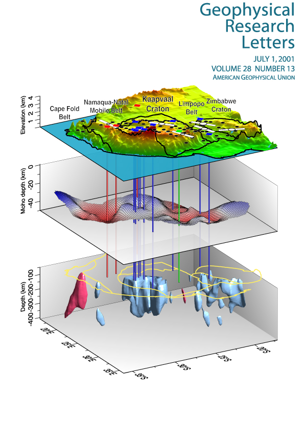
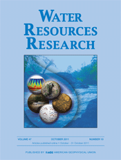
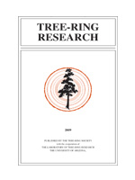
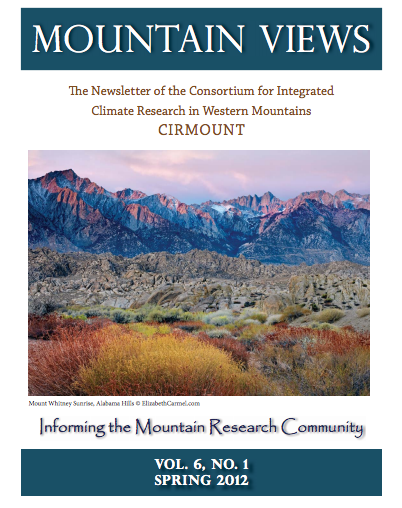

|
|
|
| Documents & Data |
This page hosts documents related to the Monsoon Project:
Publications and data from peer-reviewed research.
Articles aimed at non-technical audiences.
Workshop descriptions and presentations.
Posters presented at professional conferences. |
Peer-Reviewed Publications & Data |
|  |
North American monsoon precipitation reconstructed from tree-ring latewood.
D. Griffin, C.A. Woodhouse, D.M. Meko, D.W. Stahle, H.L. Faulstich, C.L. Carrillo, R. Touchan, C.L. Castro and S.W. Leavitt.
2013, Geophysical Research Letters, doi: 10.1002/grl.50184.
Griffin_GRL_2013_data.txt |
| |
|  |
Tree rings reveal multi-season drought variability in the lower Rio Grand basin, USA.
C.A. Woodhouse, D.M. Meko, D. Griffin, and C.L. Castro.
2013, Water Resources Research, doi: 10.1002/wrcr.20098.
Woodhouse_WRR_2013_data.txt |
| |
|
 |
Reconstructed cool- and warm-season
precipitation over the tribal lands of northeastern Arizona.
H.L. Faulstich, C.A. Woodhouse, and D. Griffin.
2012, Climatic Change, doi: 10.1007/s10584-012-0626-y.
Faulstich_Climatic_Change_2012_data.txt |
| |
|
|  |
Latewood chronology development for summer-moisture reconstruction in the U.S. Southwest.
D. Griffin, D.M. Meko, R. Touchan, S.W. Leavitt, and C.A. Woodhouse.
2011, Tree-Ring Research 67: 87–101, doi: 10.3959/2011-4.1 |
| |
|
 |
The North American Monsoon in the U.S. Southwest: Potential for investigation with tree-ring carbon isotopes.
S.W. Leavitt, C.A. Woodhouse, C.L., Castro,W.E. Wright,D.M. Meko, R. Touchan, D. Griffin, and B. Ciancarelli.
2011, Quaternary International 235, 101-107, http://dx.doi.org/10.1016/j.quaint.2010.05.006.
|
Articles |
|
Tree-ring insights on New Mexico’s monsoon and Rio Grande streamflow.
C.A. Woodhouse and D. Griffin.
New Mexico: Earth Matters, New Mexico Bureau of Geology and Mineral Resources, 2013.
Woodhouse_NM_EarthMatters_2013_data.txt |
| |
|
|  |
A tree-ring record of monsoon climate in the Southwestern U.S.
D. Griffin.
Brevia in Mountain Views: CIRMOUNT Newsletter of the Consortium for Integrated Climate Research in Western Mountains, Spring, Vol. 6. No. 1., 2012. |
| |
|
|
Tree Rings and the Monsoon in the Southwestern U.S.
D. Griffin
Climate Assessment for the Southwest Border Climate Summary, 2010. |
Workshops |
|
Tree-Ring Monsoon Workshop for Water Managers, September 19, 2013. Hosted by New Mexico State University, Las Cruces, NM.
Workshop Agenda & Participant List
Workshop Presentation
Rio Conchos streamflow reconstruction |
| |
|
 |
Tree-Ring Monsoon Workshop for Water Managers, May 14, 2012. Hosted by New Mexico State University Albuquerque Center.
Workshop Agenda & Participant List (152kb PDF)
Workshop Presentation(6.4mb PDF) |
| |
|
 |
Tree-Ring Monsoon Workshop for Water Managers November 11, 2011. Hosted by the Salt River Project
Workshop Agenda (77kb PDF)
Presentation 1: Introduction (4.7mb PDF)
Presentation 2: Reconstruction Methods (4.4mb PDF)
Presentation 3: Reconstruction Analysis (3.2mb PDF) |
Posters |
|
Southwestern U.S. seasonal precipitation and fire occurence from tree rings.
C. A. Woodhouse, D. Griffin, H.L. Faulstich, and T.W. Swetnam.
2012 Poster from Fall Meeting of the American Geophysical Union, San Francisco, CA.
|
| |
|
|
Low frequency variability of the North American monsoon as diagnosed through latewood tree-ring chronologies in the Southwest U.S.
Carrillo, C., C. Castro, C. Woodhouse, and D. Griffin.
2012 Poster from Fall Meeting of the American Geophysical Union, San Francisco, CA. |
| |
|
|
Streamflow and monsoon reconstructions for the Lower Rio Grande Basin, USA.
C.A. Woodhouse, D.M. Meko, D. Griffin, and C.L. Castro.
2012 Poster from MTNCLIM Conference in Estes Park, CO. |
| |
|
|
The tree-ring record of monsoon climate in the U.S. Southwest.
D. Griffin.
2011 Poster from EPA STAR Graduate Fellowship Conference, Washington, DC. |
| |
|
|
Historical evaluation of dynamically downscaled global climate model products for the warm season in Norht America.
C. Carrillo, H.-I. Chang, C.L. Castro, and B. Ciancarelli.
2011 Poster from: Sustainability on the Border: Water, Climate, and Social Change in a Fragile Landscape Conference. El Paso, TX. |
| |
|
|
A tree-ring reconstruction of monsoon precipitation for the southwestern United States.
D. Griffin, C.A. Woodhouse, D.M. Meko, R. Touchan, S.W. Leavitt, and C.L. Castro.
2010 Poster from Fall Meeting of the American Geophysical Union, San Francisco, CA. |
| |
|
 |
Treerings and North American monsoon variability in the southwestern United States.
D. Griffin, C.L. Castro, B. Ciancarelli, S.W. Leavitt, D.M. Meko, R. Touchan, and C.A. Woodhouse.
2010 Poster from WorldDendro: The 8th International conference on dendrochronology, Rovaniemi, Finland. |
| |
|
|
Tree rings and monsoon season rainfall variability in the Southwestern US: Strategies for sensitive chronology development.
D. Griffin, D.M. Meko, R. Touchan, C.A. Woodhouse, S.W. Leavitt, and C.L. Castro.
2009 Poster from Fall Meeting of the American Geophysical Union, San Francisco, CA.
|
| |
|
|
Use of Tree Ring and Long Term Precipitation Records to Characterize Warm Season Climate Variability in the Southwest U.S.
B.L. Ciancarelli, C.L. Castro, C.A. Woodhouse, D.M. Meko, R. Touchan, S.W. Leavitt, and D. Griffin.
2009 Poster from 5th Symposium on Southwest Hydrometeorology, Albuquerque, NM. |
|
|
|

{kind=link}
{kind=link}
{kind=link}
{kind=link}
{kind=link}
{kind=link}
{kind=link}